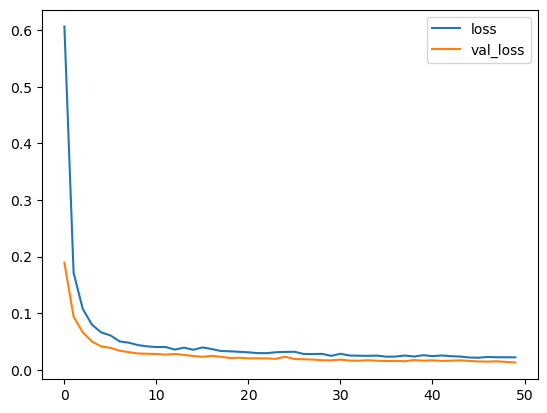

Train a Neural Network - Alternative with Keras#
The following cells show how the alternative use of keras and tensorflow would look like to set up the same model for our regression task.
import os
import numpy as np
import pandas as pd
import matplotlib.pyplot as plt
import math
from sklearn.model_selection import train_test_split
from sklearn.compose import ColumnTransformer
from sklearn.preprocessing import OneHotEncoder, StandardScaler, MinMaxScaler
import tensorflow as tf
from tensorflow import keras
from tensorflow.keras import layers, regularizers
from tensorflow.keras.models import load_model
import optuna
# Tensorflow error handling
#tf.config.optimizer.set_jit(False)
#tf.config.experimental.enable_op_determinism()
#tf.random.set_seed(1)
#os.environ["CUDA_VISIBLE_DEVICES"] = "-1"
tf.config.list_physical_devices()
Load and prepare data#
df = pd.read_csv('data/HB_data.csv', sep=',')
df_val = df.sample(frac=0.05, random_state=42)
df_tt = df.drop(df_val.index)
target_col = "energy"
X = df_tt.drop(columns=[target_col])
y = df_tt[target_col].to_numpy().reshape(-1, 1)
X_train, X_test, y_train, y_test = train_test_split(X, y, test_size=0.2, random_state=42)
# Preprocess and transform features
numerical_features = X.select_dtypes(include=["number"]).columns.tolist()
categorical_features = X.select_dtypes(include=["object"]).columns.tolist()
# Define scaling and encoding for X
x_preprocessor = ColumnTransformer(
transformers=[
("num", StandardScaler(), numerical_features),
("cat", OneHotEncoder(handle_unknown="ignore", sparse_output=False), categorical_features),
],
remainder="drop",
)
# Define scaling for y
y_scaler = StandardScaler()
# Fit scaling for X on train data only, apply (transform) scaling to both train and test
X_train_t = x_preprocessor.fit_transform(X_train)
X_test_t = x_preprocessor.transform(X_test)
# Fit scaling for y on train data only, apply (transform) scaling to both train and test
y_train_t = y_scaler.fit_transform(y_train)
y_test_t = y_scaler.transform(y_test)
# Get transformed feature names (handy for inspection)
feat_names = x_preprocessor.get_feature_names_out()
# Inspect transformed data
print("X_train: ", X_train_t.shape)
print("X_test: ", X_test_t.shape)
print("y_train: ", y_train_t.shape)
print("y_test: ", y_test_t.shape)
display(pd.DataFrame(X_train_t, columns=feat_names).head(5))
X_train: (1244, 16)
X_test: (312, 16)
y_train: (1244, 1)
y_test: (312, 1)
| num__bo-acc | num__bo-donor | num__q-acc | num__q-donor | num__q-hatom | num__dist-dh | num__dist-ah | cat__atomtype-acc_Cl | cat__atomtype-acc_F | cat__atomtype-acc_N | cat__atomtype-acc_O | cat__atomtype-acc_S | cat__atomtype-don_F | cat__atomtype-don_N | cat__atomtype-don_O | cat__atomtype-don_S | |
|---|---|---|---|---|---|---|---|---|---|---|---|---|---|---|---|---|
| 0 | -1.285813 | 0.917745 | -0.115091 | -0.282173 | 0.864921 | -0.662341 | 1.298361 | 0.0 | 0.0 | 0.0 | 1.0 | 0.0 | 0.0 | 0.0 | 1.0 | 0.0 |
| 1 | -0.647649 | 0.186561 | 0.970476 | -0.771634 | -0.619231 | -0.258013 | 1.832981 | 0.0 | 0.0 | 0.0 | 0.0 | 1.0 | 0.0 | 1.0 | 0.0 | 0.0 |
| 2 | -1.162635 | -0.394051 | 0.083728 | -0.078369 | 0.426753 | -0.294188 | 0.813984 | 0.0 | 0.0 | 0.0 | 1.0 | 0.0 | 0.0 | 1.0 | 0.0 | 0.0 |
| 3 | 0.306321 | -0.886830 | 0.274388 | 0.630579 | 0.169388 | -0.271833 | -1.260058 | 0.0 | 0.0 | 0.0 | 1.0 | 0.0 | 0.0 | 1.0 | 0.0 | 0.0 |
| 4 | 2.782975 | 0.231048 | -2.398073 | -1.403848 | -1.551664 | -0.384992 | -0.519736 | 1.0 | 0.0 | 0.0 | 0.0 | 0.0 | 0.0 | 0.0 | 1.0 | 0.0 |
# Define the model with a parameterizable architecture with Keras
def create_model(in_dim, hidden=(64, 32), dropout=0.1, lr=1e-3, weight_decay=1e-5):
inputs = keras.Input(shape=(in_dim,))
x = inputs
for h in hidden:
x = layers.Dense(
h,
activation="relu",
kernel_regularizer=regularizers.l2(weight_decay)
)(x)
x = layers.Dropout(dropout)(x)
outputs = layers.Dense(1, activation="linear")(x)
model = keras.Model(inputs=inputs, outputs=outputs)
model.compile(
optimizer=keras.optimizers.Adam(learning_rate=lr),
loss="mse",
metrics=[keras.metrics.RootMeanSquaredError(name="rmse")]
)
return model
# Define function for training loop with hyperparameter configuration
# Also define a directory to store model checkpoints during training
CKPT_DIR = "optuna_ckpts"
os.makedirs(CKPT_DIR, exist_ok=True)
def objective(trial):
hidden_layers_list = [(256,128,64), (128,64), (64,32), (64,)]
idx = trial.suggest_int("hidden_layers_idx", 0, len(hidden_layers_list)-1)
hidden_layers = hidden_layers_list[idx]
dropout = trial.suggest_float("dropout", 0.0, 0.3)
lr = trial.suggest_float("lr", 5e-4, 3e-3, log=True)
weight_decay = trial.suggest_float("weight_decay", 1e-6, 1e-3, log=True)
batch_size = trial.suggest_categorical("batch_size", [16,32,64,128,256])
epochs = 50
best_rmse = float("inf")
best_model_path = os.path.join(CKPT_DIR, f"best_trial.keras")
model = create_model(
in_dim=X_train_t.shape[1],
hidden=hidden_layers,
dropout=dropout,
lr=lr,
weight_decay=weight_decay,
)
history = model.fit(
X_train_t, y_train_t,
validation_data=(X_test_t, y_test_t),
batch_size=batch_size,
epochs=epochs,
verbose=0,
)
# Evaluate in original units (unscaled y)
y_pred = y_scaler.inverse_transform(model.predict(X_test_t))
y_true = y_scaler.inverse_transform(y_test_t)
val_rmse = math.sqrt(np.mean((y_pred - y_true) ** 2))
# Store model if model improved
if val_rmse < best_rmse:
best_rmse = val_rmse
model.save(best_model_path)
# Report to optuna
trial.set_user_attr("keras_history", history.history)
trial.set_user_attr("best_model", best_model_path)
return val_rmse
study = optuna.create_study(direction="minimize")
study.optimize(objective, n_trials=20, timeout=600)
best_trial = study.best_trial
best_params = best_trial.params
display("Params:", best_params)
print("Best RMSE:", best_trial.value)
'Params:'
{'hidden_layers_idx': 1,
'dropout': 0.03851177664057214,
'lr': 0.0009183114007974771,
'weight_decay': 5.794506140272295e-05,
'batch_size': 64}
Best RMSE: 2.553923289711433
# Analyze the best trials history
history_dict = best_trial.user_attrs["keras_history"]
df_history = pd.DataFrame(history_dict)
df_history[['loss', 'val_loss']].plot(legend=True)
plt.show()

best_model_path = best_trial.user_attrs["best_model"]
best_model = load_model(best_model_path)
best_model.summary()
Model: "functional_19"
┏━━━━━━━━━━━━━━━━━━━━━━━━━━━━━━━━━┳━━━━━━━━━━━━━━━━━━━━━━━━┳━━━━━━━━━━━━━━━┓ ┃ Layer (type) ┃ Output Shape ┃ Param # ┃ ┡━━━━━━━━━━━━━━━━━━━━━━━━━━━━━━━━━╇━━━━━━━━━━━━━━━━━━━━━━━━╇━━━━━━━━━━━━━━━┩ │ input_layer_19 (InputLayer) │ (None, 16) │ 0 │ ├─────────────────────────────────┼────────────────────────┼───────────────┤ │ dense_60 (Dense) │ (None, 64) │ 1,088 │ ├─────────────────────────────────┼────────────────────────┼───────────────┤ │ dropout_41 (Dropout) │ (None, 64) │ 0 │ ├─────────────────────────────────┼────────────────────────┼───────────────┤ │ dense_61 (Dense) │ (None, 32) │ 2,080 │ ├─────────────────────────────────┼────────────────────────┼───────────────┤ │ dropout_42 (Dropout) │ (None, 32) │ 0 │ ├─────────────────────────────────┼────────────────────────┼───────────────┤ │ dense_62 (Dense) │ (None, 1) │ 33 │ └─────────────────────────────────┴────────────────────────┴───────────────┘
Total params: 9,605 (37.52 KB)
Trainable params: 3,201 (12.50 KB)
Non-trainable params: 0 (0.00 B)
Optimizer params: 6,404 (25.02 KB)